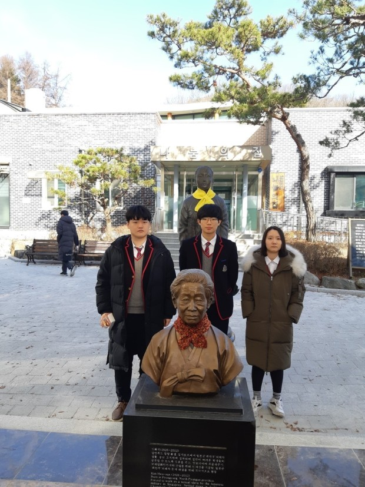

This is link for my legislation work : link for legislation

학력사항 : 신일초등학교(졸) / 신봉중학교(졸) / 신봉고등학교(졸)
현재 국민대학교에 입학하여 경영정보학부에 재학중입니다.
저는 '나눔의집'에서 약 3년간 봉사활동을 하였습니다. 나눔의집 봉사 전국연합회의 신봉고등학교 회장을 2년간 역임하였습니다. 2019년에는 '나눔의집'에서 수여하는 '일본군 성노예 피해자'와 이들의 인권회복을 위해 봉사한것에 대해서 '인권상'을 받았습니다.
2018년, '용인시상공회의소'주체의 '지역 고교생 모의창업경진대회'에 'TIMEKEEPER'라는 아이템으로 출전하였습니다. 'TIMEKEEPER'는 카페, PC방 등의 오프라인 매장에 대한 자리 안내 및 부수 서비스를 원격으로 제공하는 어플리케이션입니다. 대회 최고성적을 받았고, 이재명 경기도지사로부터 대상을 수여받았습니다.
2020년, 정춘숙 국회의원실에서 '학생명예보좌관'으로 활동했습니다. 국회와 지역구 사무실에서 많은 일들을 했었습니다. 특히 정신질환 및 코로나 우울과 관련해 법안발의안 마련을 진행했었습니다. 활동기간이 끝난 후에도 '지역의견수렴의날' 등의 지역 활동과 저소득층을 위한 봉사 등의 지역 봉사활동에 참여하고 있습니다.
Educational Background : Shinil Elementry School(graduate) / Shinbong Middle School (graduate) / Shinbong High School(graduate)
Now I'm in Kookmin University and students of MIS.
I did a lot volunteer work in 'House of Sharing'. I was in charge of the local volunteer work society in Shinbong High School. In 2019 I got award from 'House of Sharing', fight for victim's of 'Military Sexual Slavery by Japan' human rights abuse.
In 2018, I had challenged in local sham start-up competition. The item was 'TIMEKEEPER' which application helps to find a place where get seats easily for cafe, PC-cafe, coin-karaoke etc. We were in first place of competition, got award from governor Lee Jae Myoung.
In 2020, I had worked for Choun Sook Jung's collegian aide. I had a lot of work not only National Assembly but in local office. Specially I tried to make legislation for mental illness. After the period, we still sometime work for local issues like volunteer work for local low-incomer or local debate day.